Tam koşu · telefon 390×844 @3× + masaüstü 1280×800 @2× · hata 0 ·
Ölçüm: tools/olcum-hud-r3.mjs · Adaylar: tools/shot-hud-r3.mjs
Bütün kareler gerçek oyundan; adaylar sayfaya enjekte edilmiş CSS/DOM, uygulama kaynağı değişmedi.
"ses seviyesi ve müzik seviyesi kısımlarının çerçevesini düzenle kesik yerler falan var"
Çizgi kesik değil — köşe kesik. Sol çizginin çizilen boyu 45,00 px, satır da 45,0 px (oran tam 1,000). Kusur, çizginin üstündeki yatay ayıraçla hiçbir noktada buluşmaması: yatayda 4,00 px içeride, dikeyde 4,00 px aşağıda başlıyor. Ayrıca çerçevenin dört kenarından yalnız ikisi var ve o ikisi farklı kalınlıkta (3,0 ↔ 1,0 px).
| kol | kenar s/a/ü/sağ | kapalı kenar | üst köşe açıklığı | sol hizasızlık | satır boyu |
|---|---|---|---|---|---|
| T — bugün | 3,0 / 1,0 / 0 / 0 | 2 | 4,00 | 4,00 | 45,0 |
| A1 — topuz yatağa sığsın | 3,0 / 1,0 / 0 / 0 | 2 | 4,00 | 4,00 | 51,0 |
| A2 — kapalı dört kenar çerçeve | 2,0 / 2,0 / 2,0 / 2,0 | 4 | —* | 4,00 | 46,0 |
| A3 — hizalı L (yalnız yatay) | 1,0 / 1,0 / 0 / 0 | 2 | 4,00 | 0,00 | 45,0 |
| A4 — hizalı + bitişik L ✓ | 1,0 / 1,0 / 0 / 0 | 2 | −1,00 | 0,00 | 49,0 |
* A2'de köşe tanım gereği kapalı (kutunun kendi üst kenarı var); açıklık ölçütü yalnız L biçimi için anlamlı.
border-box yüzünden
yanlıştı; doğruyu ancak çizilen piksel söyledi.
.sheet-pad bir flex kolon ve
gap: 4px — ayarlar ekranında her satırın arası 4 px hava. Kusur yalnız
kaydırıcıda göze çarpıyor çünkü orada dikey bir çizgi o boşluğu görünür kılıyor.
A4 bunu margin-top: -4px ile kapatıyor.
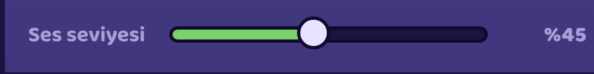
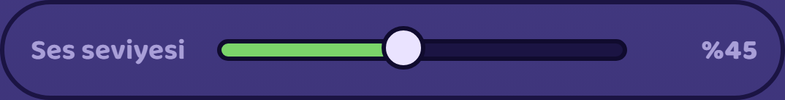
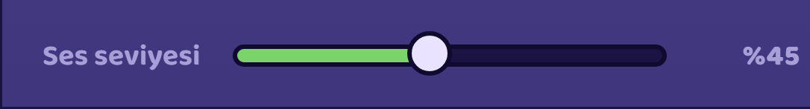
"fps sayacını kaldır"
Katman ekranın yalnız %1,30'unu kaplıyor (4.268 px²) — ama asıl bulgu çakışmada: ayarlar panelinin içeriğinin üstüne biniyor ve telefonda tam olarak "Ses seviyesi" kaydırıcısını örtüyor. Her iki kadrajda ayrıca joystick'in üstünde duruyor.
| kadraj / sahne | alan | ekran % | katmanın ALTINDA kalan |
|---|---|---|---|
| telefon · oyun | 4.268 px² | 1,30 | hud, joystick |
| telefon · ayarlar | 4.268 px² | 1,30 | hud, menu, setting-row, setting-slider, joystick |
| masaüstü · oyun | 4.268 px² | 0,42 | hud, joystick |
| masaüstü · ayarlar | 4.268 px² | 0,42 | hud, menu, joystick |
İki kol var, farkı kapsam:
| kol | ne gider | ayarlar ekranı | kayıt şeması | bedel |
|---|---|---|---|---|
| B1 | yalnız katman | "FPS Sayacı" anahtarı kalır | değişmez | yok |
| B2 ✓ | katman + anahtar + showFps alanı | bir satır kısalır | sürüm artmaz | 3 yorumda emsal atfı boşa düşer |
showFps bugün save.ts'de üç yorumda "ADDITIVE alan → saveVersion ARTMADI"
emsali olarak anılıyor. Alan silinince o üç yorum var olmayan bir alana atıf yapar — düzeltilir.
Kayıt güvenliği açısından bedel yok: ayarlariBirlestir bilinen alanları tek tek
seçiyor, eski kayıttaki fazla alan sessizce düşüyor.
"2 ödül varsa alt alta olsun ve aralarında + olsun şu an yan yana kötü duruyor"
Ödüller "yan yana" bile değil — aynı metin akışında. .reward-amount'ın
doğrudan çocukları: svg, metin, svg, metin. İki ödül ayrı eleman
değil, yani "alt alta koy" bir CSS satırı değil, önce sarmalama işi.
| kol | çocuk | dizilim | satır w×h | satır / kart iç eni | ödüller arası açıklık | "+" |
|---|---|---|---|---|---|---|
| T — bugün (telefon) | 6 | row | 266,0 × 70,0 | 0,980 | 9,58 | yok |
| C1 — alt alta + "+" ✓ | 3 | column | 266,0 × 92,0 | 0,980 | 0,00 | var |
| T — masaüstü | 6 | row | 274,0 × 70,0 | 0,980 | 12,74 | yok |
İki sayı kullanıcının "kötü duruyor"unu karşılıyor:
C1 kartı 70 → 92 px uzatıyor (+%31); genişlik değişmiyor, çünkü ilk ödülün kendi metni ("🪙 +%0,4 kalıcı gelir") zaten 263,7 px.
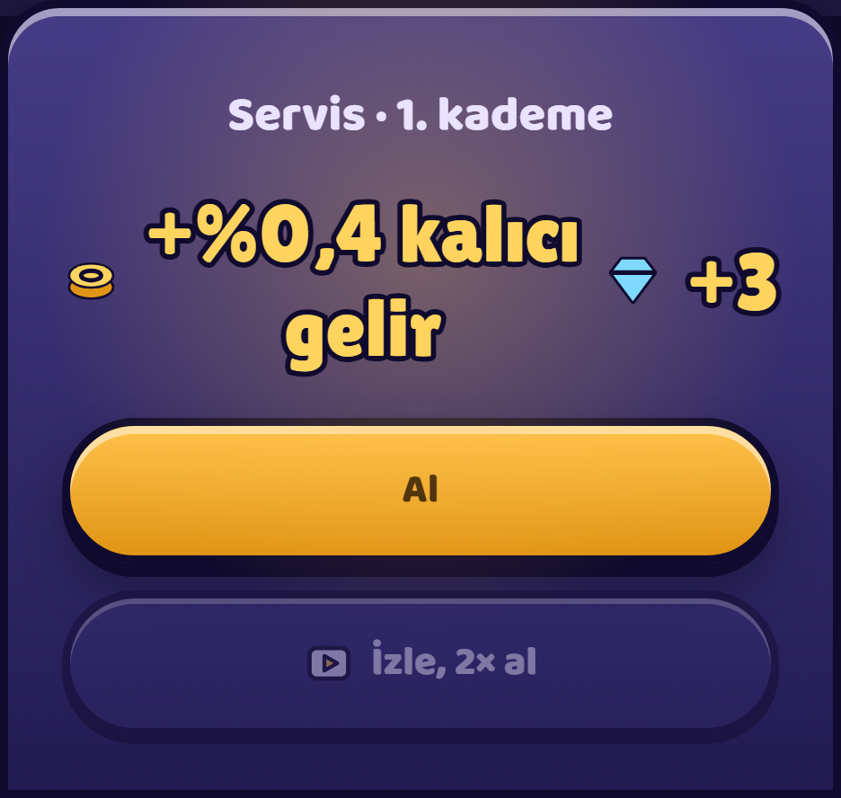
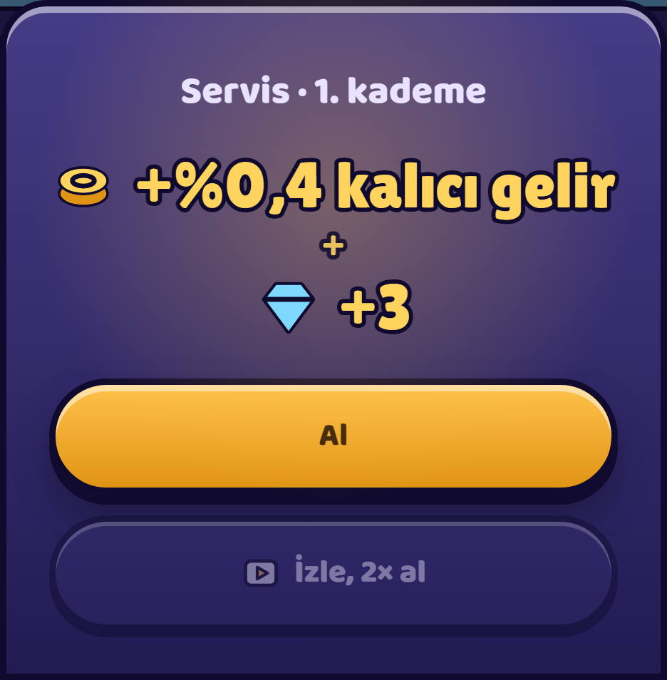
"yuvarlak etrafı siyah bar da öyle bar ve yuvarlak birleşik olmalı clash of clansınki gibi düşün ve en üst satırda yan yana olmalı"
Cümlen iki ayrı şey istiyor, ikisi de ayrı ölçüldü:
| kol | madalyon–bar arası | üst şerit boyu | kaç satıra yayılmış | ilerleme yolunun boyu |
|---|---|---|---|---|
| T — bugün | 3,0 px boşluk | 69,0 | 3 | 50,0 |
| D1 — halka | birleşik | 64,0 | 2 | halka |
| D2 — tek üst satır | 3,0 px boşluk | 56,0 | 1 | 50,0 |
| D3 — halka + tek satır | birleşik | 56,0 | 1 | halka |
Bugün çubuk madalyondan dar (50,0 ↔ 56,0) ve arada 3,0 px var. Üst şerit 3 ayrı hizaya yayılmış, 69,0 px yer kaplıyor; tek satıra inince 56,0 px (−%18,8). Bugünkü çubuğun iç yüksekliği 10,0 px'in 2,5'i kontura gittiği için 5 px — bir seviye atlamasının hareketi bu yatakta neredeyse görünmüyor.
Sekiz aday, hepsi gerçek oyundan, aynı seviyede (%27,1 dolu):
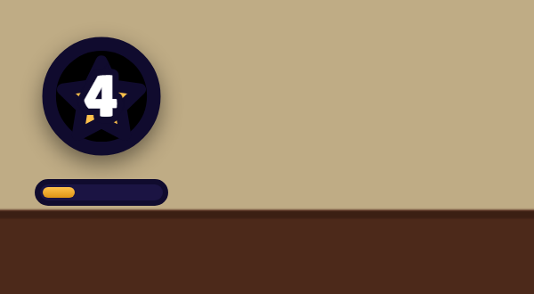
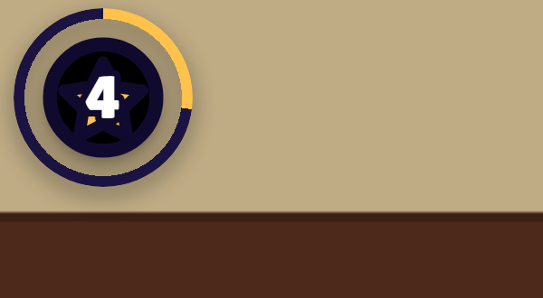
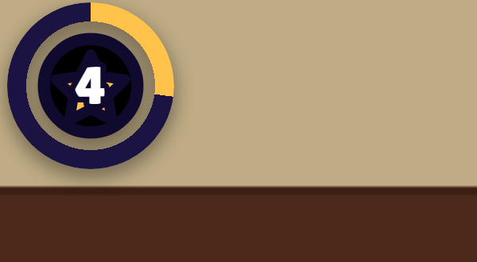
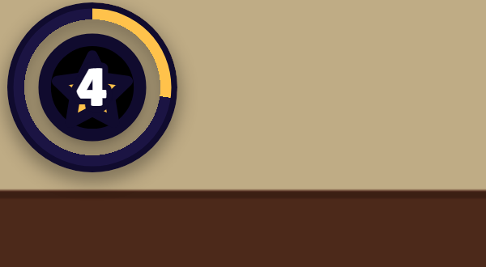
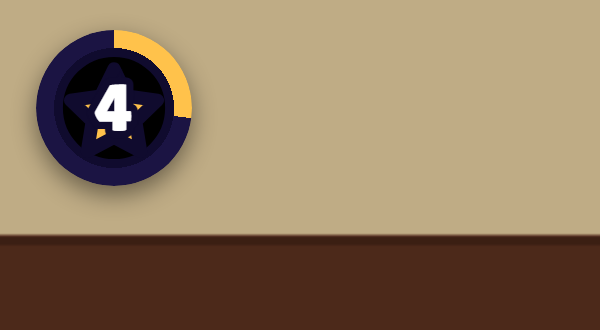
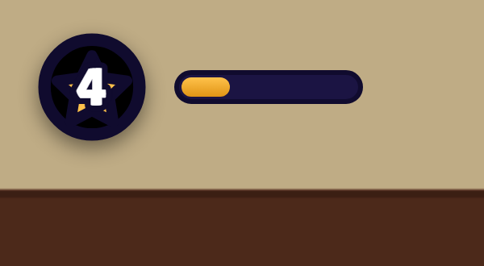
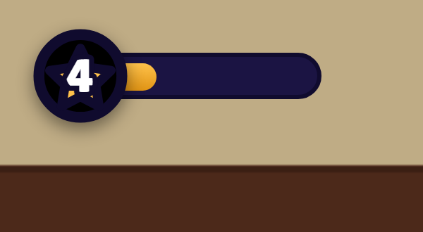
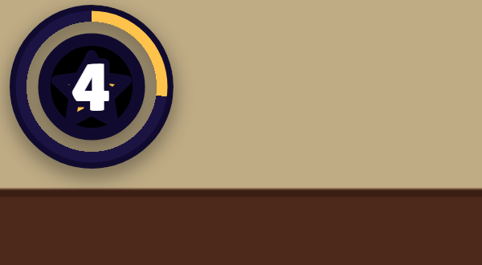
Not: B–E ve H "birleşik" istediğini karşılıyor; F ve G "yan yana"yı karşılıyor ama bar ayrı kutuda kalıyor. Seçtiğin aday tek üst satır (D2) ile birlikte de uygulanabilir — ikisi bağımsız.
"sağ üstteki elmas ve paraya da çerçeve verebilirsin"
| kadraj / kol | çerçeve | arkadaki sahnenin oynaması | yazının altındaki zeminin oynaması | geçirme |
|---|---|---|---|---|
| telefon · T (kutusuz) | 0,0 | 5,80 | 5,68 | 0,979 |
| telefon · E1 (hap çerçeve) | 2,0 | 5,17 | 1,64 | 0,317 |
| masaüstü · T (kutusuz) | 0,0 | 14,54 | 14,53 | 0,999 |
| masaüstü · E1 (hap çerçeve) | 2,0 | 14,63 | 4,27 | 0,292 |
Oynama = kesenin arkasındaki her pikselin, oyuncu altı durakta yürütülürken ölçülen standart sapmasının ortalaması. Geçirme = zeminin oynaması / sahnenin oynaması.
Altı aday:
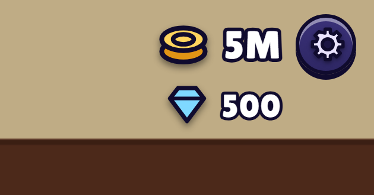
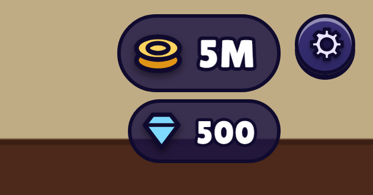
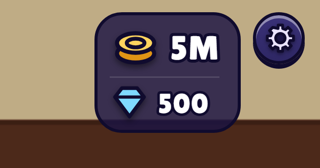
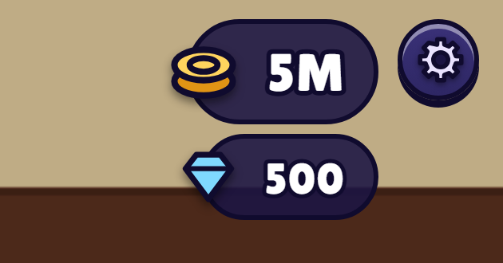
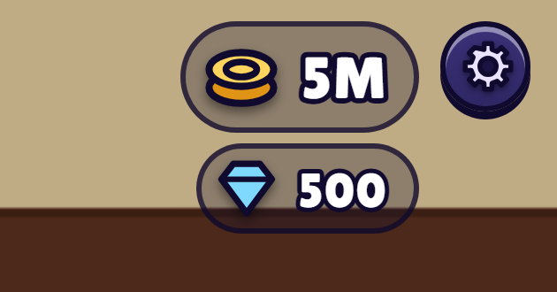
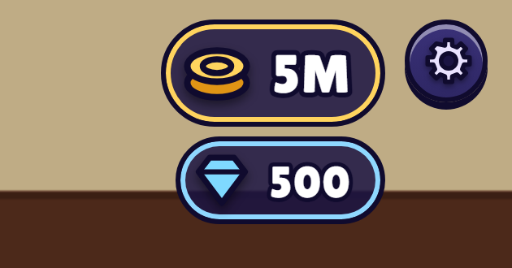
§A · §B · §C için tek "tamam" yeter (önerilerim yeşil satırlar: A4, B2, C1).
§D için bir rozet harfi (+ istersen "tek satır da olsun"), §E için bir kese harfi
— ya da "kutusuz kalsın".